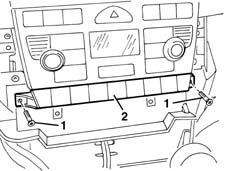
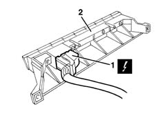
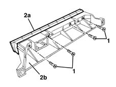

5505A25 SWITCH UNIT for OPTIONAL EQUIPMENT - R.R.
- Path
- Procedures > 55 ELECTRICAL EQUIPMENT > 5505 ELECTRICAL CIRCUIT FOR INSTRUMENTS/INDICATORS > 5505A multi-function components > 5505A25 SWITCH UNIT for OPTIONAL EQUIPMENT - R.R.
- Kind
- repair procedure (removal / refitting; the operation number is the code)
- Applies to
- all engines; all production periods
- Interactive page
- https://sloeber94.github.io/elrnDB-lYpsln/en/#/2429364
Applies to: all engines; all production periods
 Removing
Removing
 Refitting
Refitting7040L28 tunnel switch panel - r r
7040L22 REAR TRIM on TUNNEL -R.R.
7040A18 glove compartment on facia - arrange
7040A30 Left instrument panel lower TRIM - R.R.
2125A30 lever/knob cover - r + r
7040A28 TRIM on gearbox control panel - R.R.
1. Undo the two fixing bolts.
2. Move the assembly slightly.

Applies to: all engines; all production periods
1. Disconnect the electrical connection.
 | Name | Connector |
|---|---|---|
1 | Switch control unit |
2. Recover the switch unit with mount.

Applies to: all engines; all production periods
1. Undo the bolts.
2. Remove switch unit (2a) from mount (2b).

Applies to: all engines; all production periods
Refitting
RemovingPlace the switch unit on the mount and secure it using the bolts.
Connect the electrical connection.
Position the switch unit with mount and secure it using the bolts.
7040A28 TRIM on gearbox control panel - R.R.
2125A30 lever/knob cover - r + r
7040A30 Left instrument panel lower TRIM - R.R.
7040A18 glove compartment on facia - arrange
7040L22 REAR TRIM on TUNNEL -R.R.
7040L28 tunnel switch panel - r r
Check that the switches are working.
Topics linked from this page (8)
- 2125A30 lever/knob cover - r + r
- 7040A18 glove compartment on facia - arrange
- 7040A28 TRIM on gearbox control panel - R.R.
- 7040A30 Left instrument panel lower TRIM - R.R.
- 7040L20 tunnel trim - r r
- 7040L22 REAR TRIM on TUNNEL -R.R.
- 7040L28 tunnel switch panel - r r
- H90 Switch control unit
Topics that link to this page (13)
- 5010D27 upper mixed air temperature sensor (1), lh or rh - r r following electrical circuit check
- 5010D30 passenger compartment air temperature sensor - r+r following electrical wiring check operation
- 5020B10 heater control support - r+r
- 5020B35 outdoor/recirculation air intake flap control cable - r r
- 5020B38 air distribution flap control cable - r+r
- 5020B42 air mixer flap control cable - r+r
- 5040C10 air conditioner box - r+r
- 5040D18 air conditioner control unit - r r
- 5040D75 Air conditioning recirculation flap control MOTOR - R.R.
- 5580C22 AIR BAG MODULE - Passenger side - R.R.
- 7040A10 instrument facia trim - r+r
- 7040A25 central facia trim - r r
- 7040L10 cabin floor carpet - r r